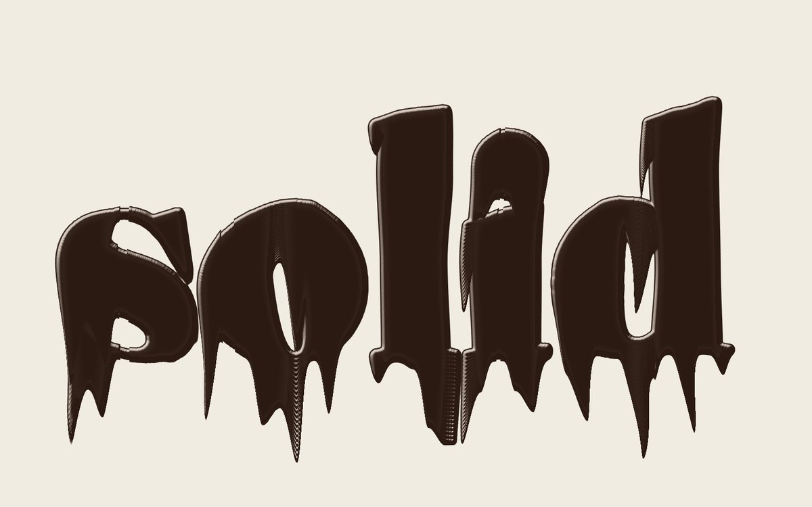
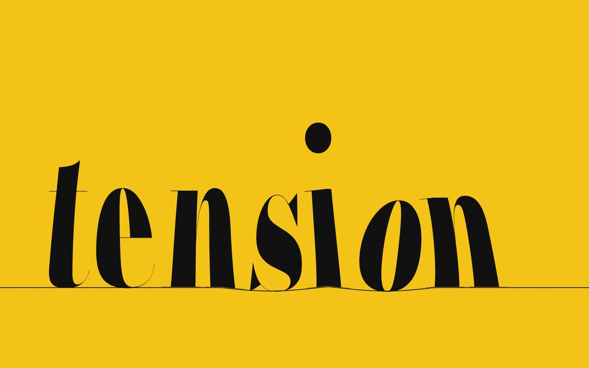
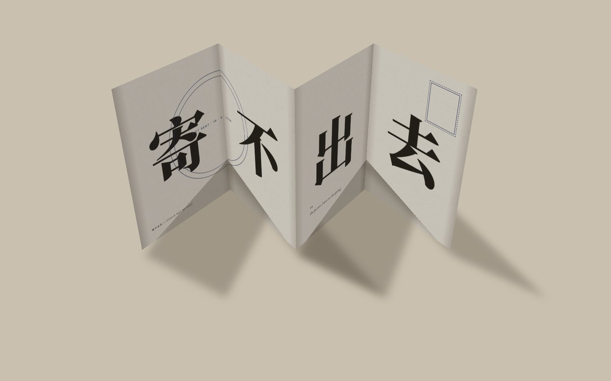
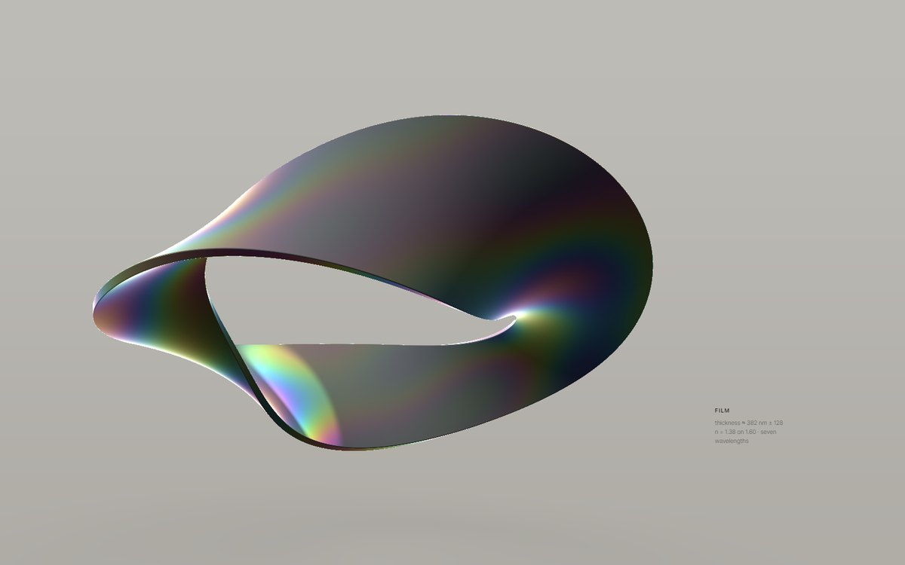
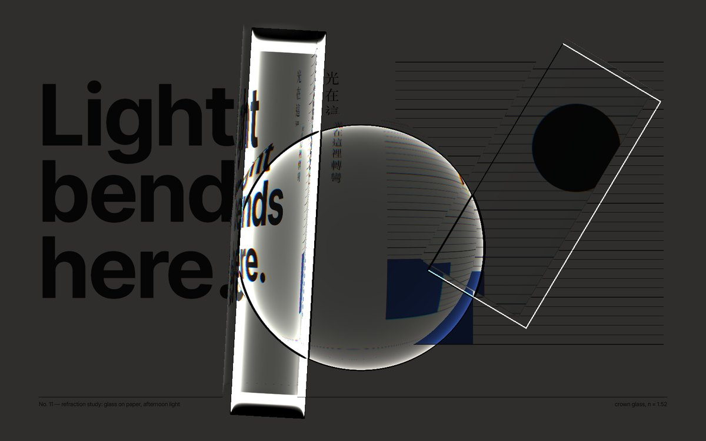
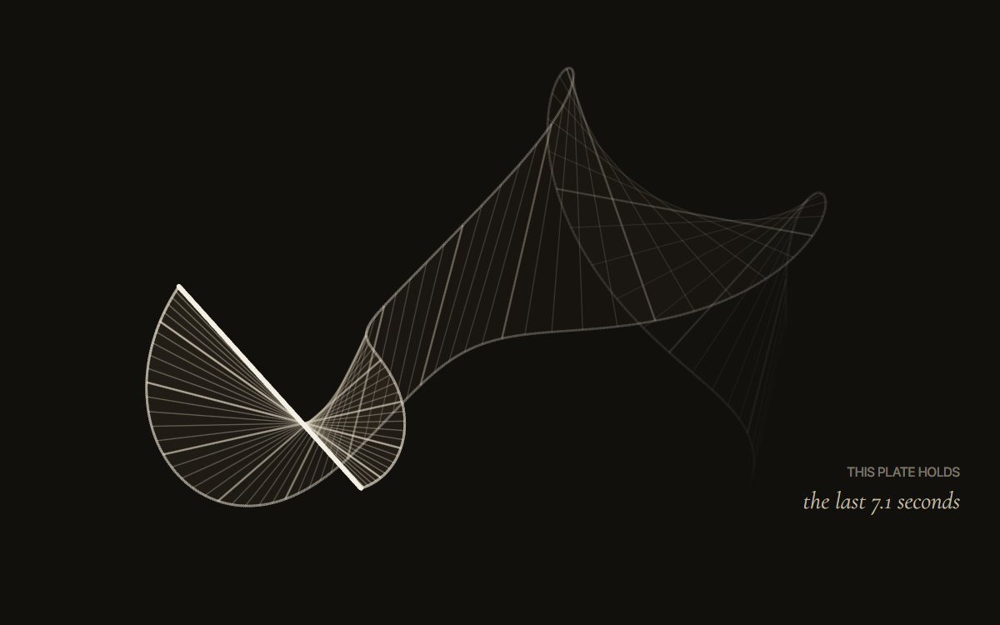

Motion Studies02
動態研究 第二集 物質性
Six motion posters about what things are made of. Ink that changes state, a word with mass and spring, a sheet of paper with a back, a film thinner than a wavelength, glass that re-sets a page, and time itself, kept on a plate. The materials are not simulated for their own sake: each one is a way of making graphic design that could not exist without duration.

“solid” turns wet, drips, fuses with itself and stands up again as “liquid”.
16 s · WebGL · distance field of set type

The dot of the i leaves its letter and strikes every other one; the word rings.
14 s · Canvas 2D · traced outlines, damped oscillators

A letter not yet sent folds into a screen; on its back, the reason: 寄不出去.
20 s · CSS 3D · hinged panels, projected shadow

A ribbon whose colour exists only in reflection, set by film thickness and angle.
20 s · WebGL ray marching · thin-film interference, 7 wavelengths

A rod, a prism and a lens re-design a printed page, then the room goes dark.
18 s · WebGL · refraction, dispersion, caustics from thickness

One bar of light; its past stays on the plate, builds a structure, and is forgotten.
20 s · Canvas 2D · deterministic temporal sampling